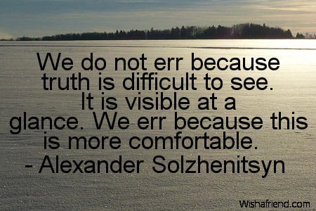

Below is the introduction to an essay I've written about a Scottish mid-20th-century philosopher John Macmurray. Like my essay on Polanyi, this was partly a way for me to go through his work and set it down for myself. But the interest is through the lens of aspects of Macmurray's philosophy that were prophetic for our times. This is brought out in the introduction which is reproduced below. The last couple of sections also outline the way in which our society is increasingly built on pyramids of lies. So you can also skim through the sections on Macmurray and just read the intro and the concluding two sections — which I'll also extract at some stage and write up as their own essay.I'd be grateful if you're interested in having a look at the essay and if you email me on ngruen AT Lateral Economics, I'll send you a link with commenting and suggesting permissions.
Truth and love must overcome lies and hatred: The contemporary relevance of John Macmurray
Sometimes the problems which life sets … men or to nations … have a philosophical side to them. That happens particularly when the driving forces of a nation or even of a whole civilization are spent. John Macmurray, 1930.
Introduction
On December 10, 1989, Czech dissident Vaclav Havel improvised a line at the end of his speech which, like Martin Luther King Jr’s improvised conclusion of his “I have a dream” speech, burned itself into popular consciousness far more effectively than his prepared remarks. “Truth and love must overcome lies and hatred.” Havel had become famous in the West as a dissident anatomising the system of official lies that drew everyone into complicity with them. He insisted that Stalinist totalitarianism had been replaced by post-totalitarianism, which must be understood as a set of institutions rather than the dictatorship of one man. And he drew parallels between post-totalitarianism and Western consumerism. Today we all ponder the dramatic speed with which our own public lives are transitioning to new ‘post-truth’ realities. And, as we look around for their antecedents, we find them well beyond political campaigning. For instance, here are the opening paragraphs of a recently published report from the front published anonymously by a local council employee. The recognition may be recent, but it’s been decades getting here:
I spent 10 years of my life writing. I wrote neighbourhood plans, partnership strategies, the Local Area Agreement, stretch targets, the Sustainable Community Strategy, sub-regional infrastructure plans, funding bids, monitoring documents, the Council Plan and service plans. These documents describe the performance of local government and its partners.
I have a confession to make. Much of it was made up. It was fudged, spun, copied and pasted, cobbled together and attractively formatted. I told lies in themes, lies in groups, lies in pairs, strategic lies, operational lies, cross-cutting lies. I wrote hundreds of pages of nonsense. Some of it was my own, but most of it was collated from my colleagues across the organisation and brought together into a single document. As a policy, partnerships and performance officer in local government, this was my speciality and my profession.
Why did I do it? I did this because it was my job.
Against this backdrop, this essay introduces some of the central aspects of the thought of a mid-20th-century Scottish philosopher. Though both inspire us with their extraordinary courage, Havel’s and Macmurray’s thought and life experience were very different. Nevertheless, John Macmurray’s central ethical vision aligns perfectly with Havel’s catchcry quoted above. Macmurray saw all human relations and human culture as a dialectical relation between love (through which we find our way to a truthful and productive relation with reality and with others), and fear (which leads ultimately to solipsisitic, and duplicitous self-absorption, and thus to atomised isolation). There’s something dated about Macmurray’s writing — perhaps because his imagined audience would have included those with an upbringing such as his own devoutly Calvinist one. He can be too quick to moralise, as he was when describing economic depression as a failing of social morality. But through all this there’s a deeply admirable combination of simplicity, sincerity and seriousness in all his writing. More particularly, he offers a useful treatment of contemporary mid-20th-century issues which looks increasingly prophetic for our own times:
- Macmurray treats natural science as a paradigm of rationality while being keenly aware of its limitations as a source of all knowledge.
- Science’s central strength is its constant striving for fidelity to experience. This is part methodological (with experience being the ultimate authority trumping theory and authority) and part ethical (requiring us to embrace the teaching of experience, however disillusioning or discomforting.)
- But science is inadequate as a universal discourse. And its representation of nature as object obscures human agency (or freedom). This is true in the simple sense that science facilitates technology but provides little guidance on how to value or deploy it. It’s also true in a deeper sense that the problem science sets itself — to know more about the natural world — tends to presuppose a dualism between our own subjective mind ‘in here’ over and against objective reality ‘out there’. This offers an impoverished metaphysic for thinking about human selves in relation. Macmurray proposes the centrality of communion across difference as the ground of all our experience and our humanity.
- From this he builds the case for radial humility as the starting point of ethical thought. On this basis he argues the centrality of faith — faith in embracing love over fear — as the basis of a good life and a good society.
- This alternative discourse is alive to the myriad opportunities for bad faith to infect our thought and conduct and for us to disguise it, from ourselves and others. In this way of seeing things, one of the chief ways bad faith manifests itself in the world is as a counterfeit of good faith.
These things bear on the human experience at a sufficiently deep level that diagnosis is just the first step of a never-ending labour of understanding and action. Thirty years after the publication of his book proposing that emotion was as important as intellect in constituting ‘reason’ — a position since rehabilitated in both philosophy and science — Macmurray wrote that while he wouldn’t change the burden of his analysis, it offered no immediate solution to the world’s problems. “Indeed, in the field which it cultivates, no quick and easy solutions are thinkable”. That having been said, I think Macmurray’s thought does lend some theoretical depth to many practical contemporary issues. To illustrate the claim, I’ll conclude the essay by outlining the way in which Macmurray’s thought helps articulate some ideas I’ve been pondering regarding evidence-based policy and practice. The structure of the essay is as follows:
IntroductionDoing the philosophical work of his generation: Some biographical backgroundBBC lecturerPersonsReligionFear and death, love and lifeReason, science, emotion and the otherEngaging with the other: the real and unrealFaithFaith in action: the upside of generosityDiversity and disadvantageRadical friendshipTruth
there is a lot to like in what Macmurray apparently says!
"Truth and love must overcome lies and hatred"
Coincidences can be funny. In the last 6 months or so, I write a weekly piece for the Dutch anti-lockdown group 'viruswaarheid' (translated: virustruth), which had as its motto 'love and truth'. I end every piece with some allusion to the idea that love and truth will win out against the forces now opposing those two. There's Calvinism's long shadow for you!
+1
Thanks NG. As Paul says, truth and love must overcome lies and hatred.
paul frijters says:
August 16, 2021 at 7:27 pm
"there is a lot to like in what Macmurray apparently says!
“Truth and love must overcome lies and hatred”
"Coincidences can be funny. In the last 6 months or so, I write a weekly piece for the Dutch anti-lockdown group ‘viruswaarheid’ (translated: virustruth), which had as its motto ‘love and truth’. I end every piece with some allusion to the idea that love and truth will win out against the forces now opposing those two. There’s Calvinism’s long shadow for you!"
*
..." Calvin allowed very little place in his life for purely aesthetic enjoyment of art. His whole attention was directed to theological matters and the precise, and to him the inevitable, relation which these theological matters bore to human conduct. His was a keen, penetrating mind, sharpened by legalistic training, which had never gone through the torment of doubt that so affected Luther.
Calvin based every thought on the scriptures. He did not speak for himself, but was only the interpreter of the Scriptures. On the one hand this made him very humble, but on the other since he was admittedly the most astute theologian of his day, he could not conceive of anyone doubting the truth and the authority of his interpretations. Little did he realize that he was attempting to set up a new form of religious tyranny, and in many respect succeeding."...
Leslie P. Spelman, “Calvin and the Arts”, The Journal of Aesthetics and Art Criticism, Vol. 6, No. 3 (Mar., 1948), p. 246.
https://en.wikiquote.org/wiki/John_Calvin
*
"January 2021 curfew and protests
....
"The Dutch Police Association described the riots at the worst violence in Netherlands in the last 40 years.[94] The protests have been described as being composed of mostly young men.[94][97]"
https://en.wikipedia.org/wiki/COVID-19_pandemic_in_the_Netherlands
"Update 17-2: Dit profiel van Engel uit oktober is opnieuw relevant vanwege de rechtszaak over het afschaffen van de avondklok. Lees ook ons profiel van Viruswaarheid als organisatie: Tegenstanders noemen het een wappieclub, zelf zien ze zich als het verzet: dit is Viruswaarheid
"Update 2:17 PM: This October profile of Engel is again relevant due to the lawsuit over the abolition of the curfew. Also read our profile of Virus Truth as an organization: Opponents call it a wappie club, they see themselves as the resistance: This is Virus Truth"
https://www.trouw.nl/binnenland/wetenschapper-sekteleider-of-megamafklapper-wie-is-willem-engel~b44dd0f0/
*
"Profiel Viruswaarheid Tegenstanders noemen het een wappie club, zelf zien ze zich als het verzet: dit is Viruswaarheid
"Profile - Virus Truth "Opponents call it a wappie club, they see themselves as the resistance: this is Virus Truth"
"A club of derailed wappies (fn1.) who simply have too limited capacities to allow reality to sink in. That's roughly how detractors see Virus Truth's supporters. But for them, wappie is starting to become something of a badge of honor. They see themselves as the resistance, with associated terminology. Fighting for freedom, against the regime, we of the people. Virus Truth's supporters cluster around that story, around the belief that they are on the right side of history.
...
"Cuddly toys
"The figurehead of this message is the Rotterdam dance teacher Willem Engel. Since the first wave, he has stepped forward during demonstrations against the measures. Initially, his weapons were hugs and love. But supporters of Virus Truth also opt for other methods, as employees of the Guldenakker residential care center in Goirle discovered. They received death threats to their heads after a call from Engel. The care complex had imposed a visit ban. Call them, said Engel, calling the threats "unfortunate."".
https://www.trouw.nl/binnenland/tegenstanders-noemen-het-een-wappieclub-zelf-zien-ze-zich-als-het-verzet-dit-is-viruswaarheid~bd3e42837/
*
"You Are Not Ready for the Real Dutch Coronavirus Facts
31 August 2020
Turning_Dutch
"Last week we found a coronavirus flyer in our mail box. The flyer contains Dutch coronavirus ‘facts’ and counterarguments for measures taken against the spread of the virus. It looks like the
~ viruswaarheid ~
movement has found itself some followers around these parts. However, it remains an anonymous flyer, simply stating it is a ‘concerned citizens’ initiative. It gave me an idea. How ready are you for the truth about the Dutch coronavirus?"
https://turningdutch.com/2020/08/31/the-truth-about-the-dutch-coronavirus/
*
fn1.
Wappie - (slang, Netherlands)
● "A crackpot, a weirdo.
"More negative and more markedly associated with conspiratorial thinking and mental illness than
gekkie, which in some contexts is used as a milder and even somewhat affectionate near-synonym.
"Derived terms
viruswappie
"Adjective
wappie (not comparable)
(slang, Netherlands) high (intoxicated by recreational drugs, esp. when found pleasant or comforting)
[from ca. 1990]
https://en.wiktionary.org/wiki/wappie
Truth and love must overcome lies and hatred.